Carolyn Yu
Introduction
The main purpose of our project is to
Role
I am the only
Collaborators
- Visual Design: Jou-Hsuan Chiang, Min-Wen Lo, Chen Hsu
- Project Manager: Li-Jia Teng
Ideation
In Taiwan's social expectations, woman must be obedient and dressed in feminine ways. However, during college, I was a backbiting target due to my dressing and makeup style. Therefore, I and my team built interactive installation arts to remind people about the pain caused by their unintentional criticizing and inspire women to be confident in themselves.
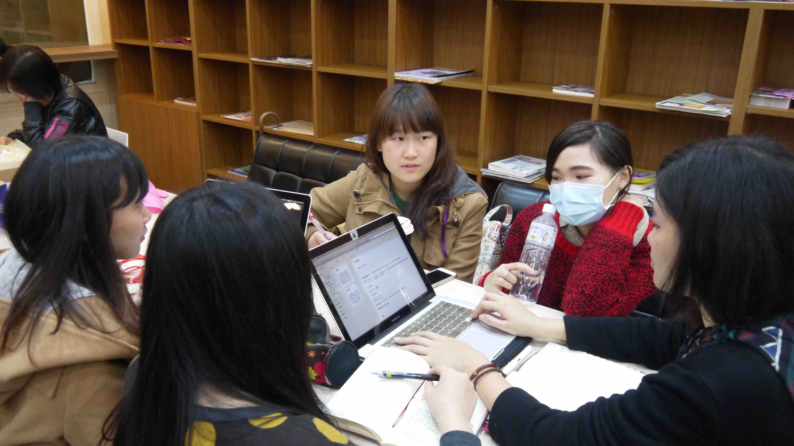
Group Meeting01 Listen to Your Beats
People nowadays unintentionally care more about others' opinions and less about expressing their own. To help people realize how much they value the opinions of others, we let users observe their pulses while listening to the criticism on their appearance. By noticing the increase of their heart rate, audience can introspect the extent to which other people's opinions affect them.
Tools
- Software: Prodessing, Java, Photoshop, Illustrator, Flsah
- Hardware: Arduino, Projector, Pulse Sensor
User Flow
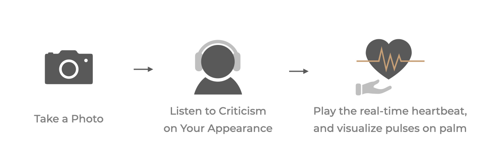
Criticisms
To mimic the criticism on one's appearance, we prerecorded 14 dialogues targeting different attires of audience, 8 for female and 6 for male.
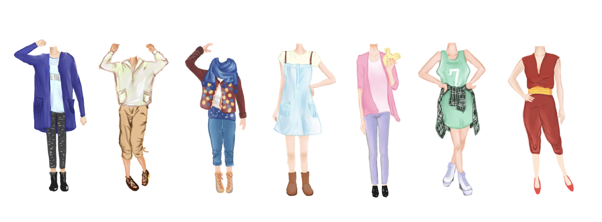
Parts of the attire illustrations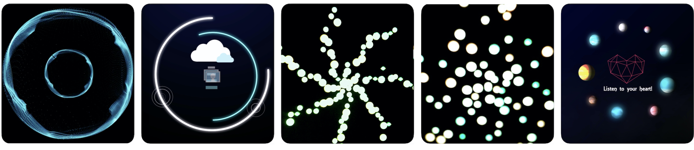
Screenshots of the tutorial, regular heartbeat pattern, and non-regular pattern.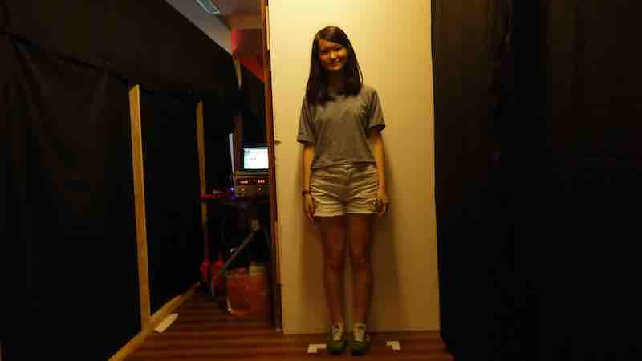
Taking a photo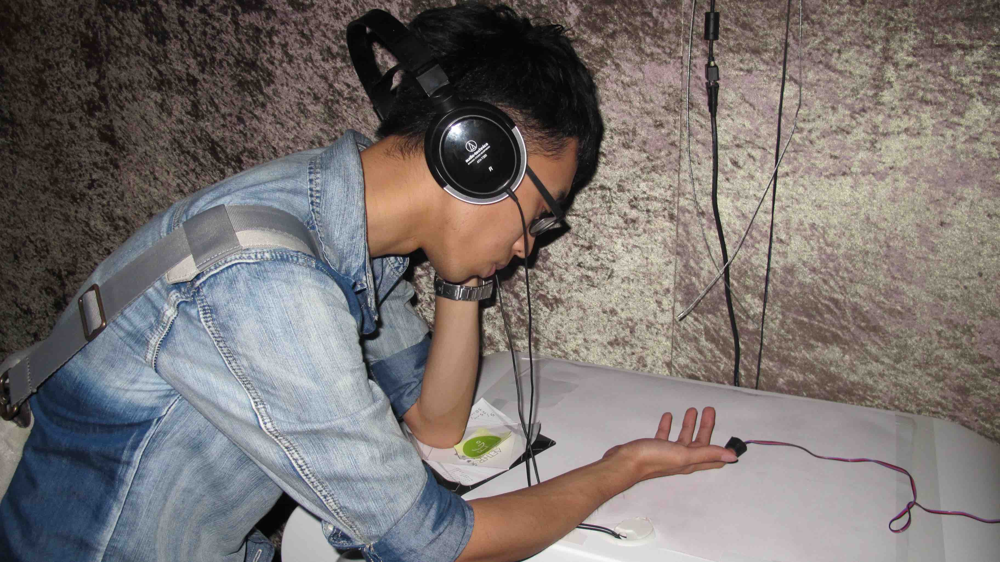
Wearing the Pulse sensor02 Save Emily
To comply with the expected social norms and be more feminine, women put on high heels which damage the ankle, wear makeup that harms the skin type, and wear underwear that squeezes the body. These beauty items have become constraints for women, torturing their daily lives. We invited the audience to get rid of these constraints by knocking down the objects in this room and inspired women to think about their definition of beauty.
Tools
- Software: Processing, Java, Photoshop, Illustrator, Flash
- Hardware: Arduino, Makey Makey, Pumping motor, Motor-driven board
User Flow
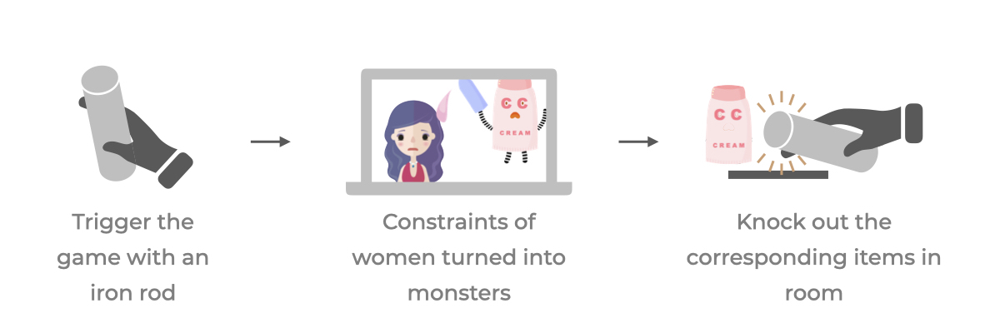
The Monsters
We chose 6 common items that restricted women's daily life, and transform them into 6 little monsters shown as below:
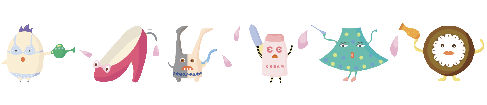
Monsters from left to right represent bra, high heels, silk stockings, cosmetics, skirts, and circle contact lenses.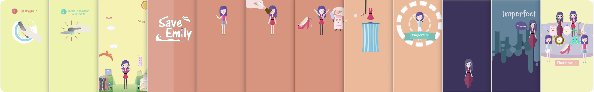
Screenshots of the tutorial, success screen, and failure screen.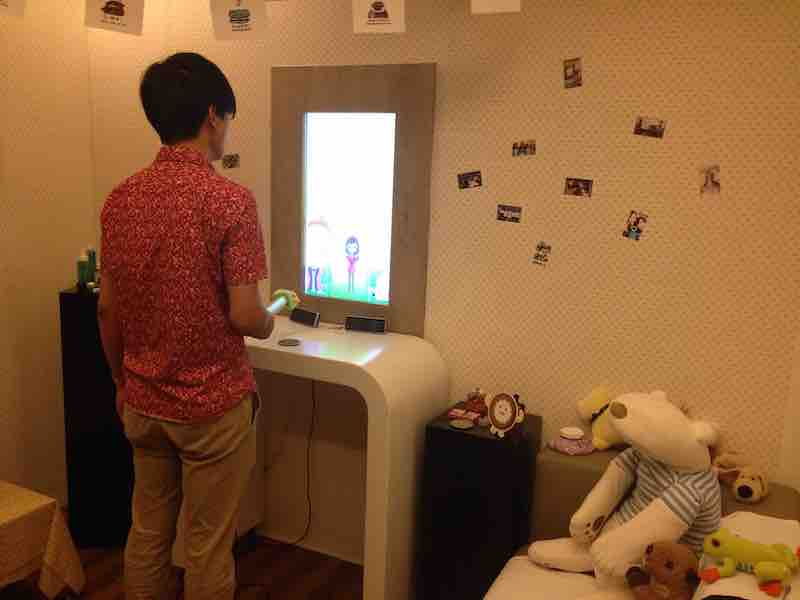
Girl room scene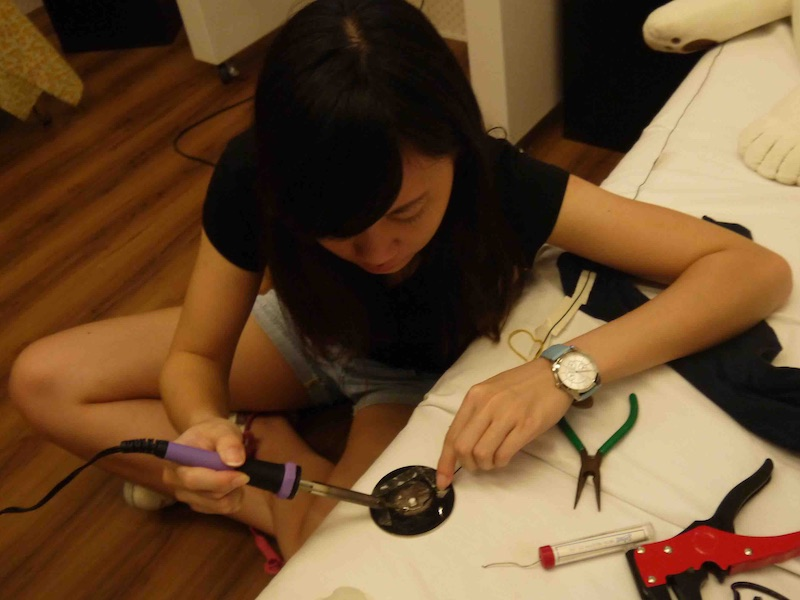
Repairing installations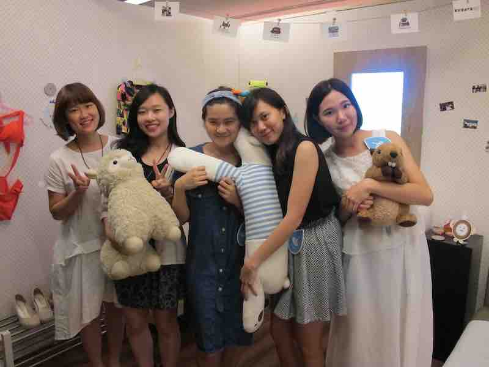
Team photo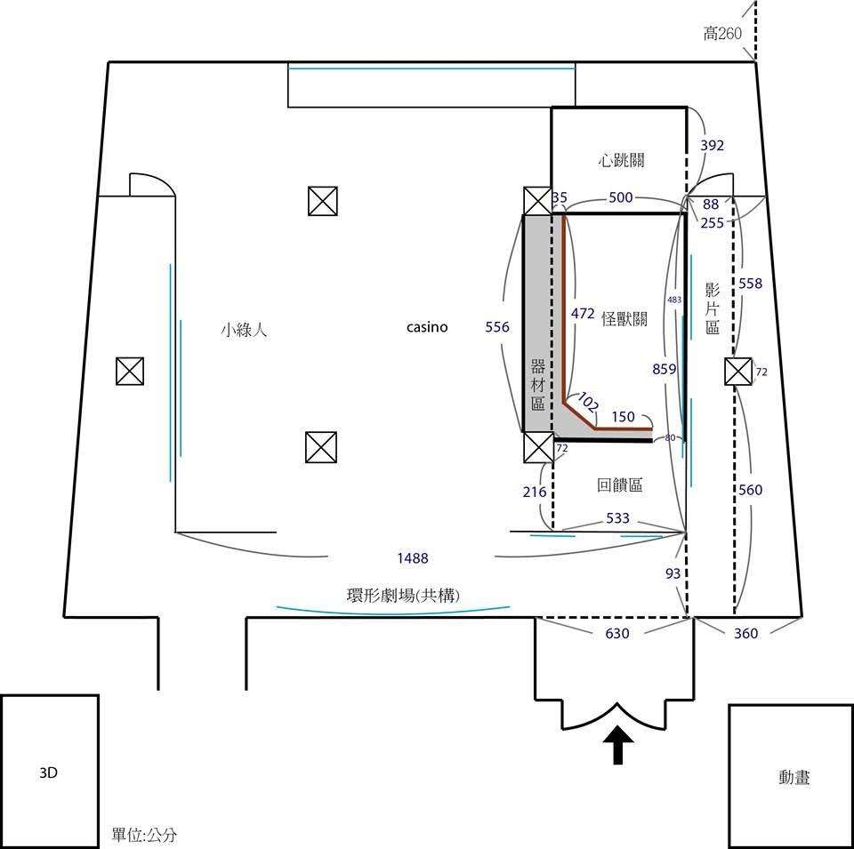
Exhibition site plan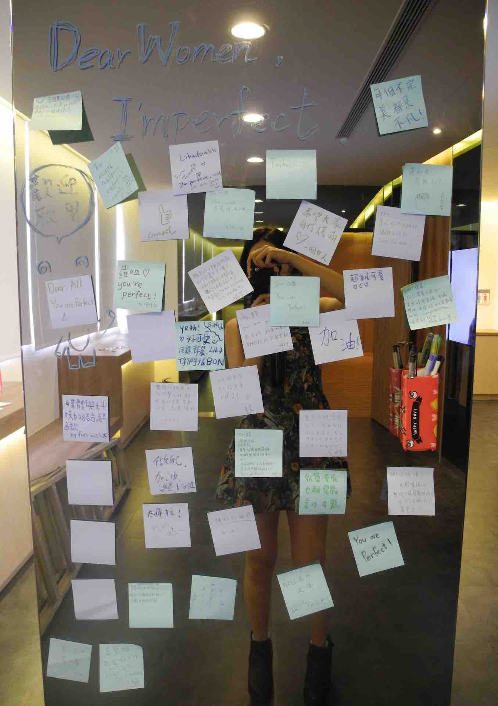
Audiences' feedback